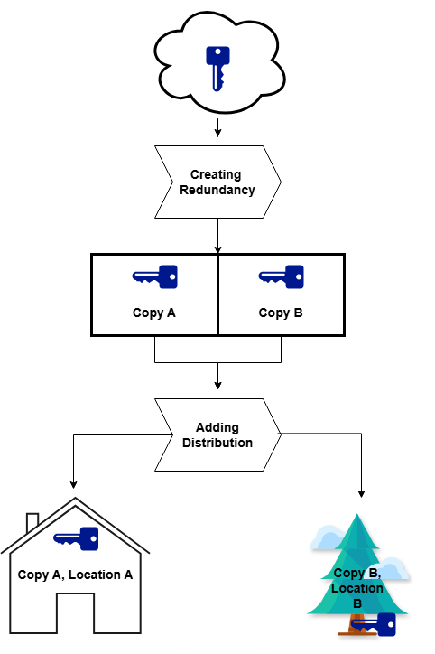
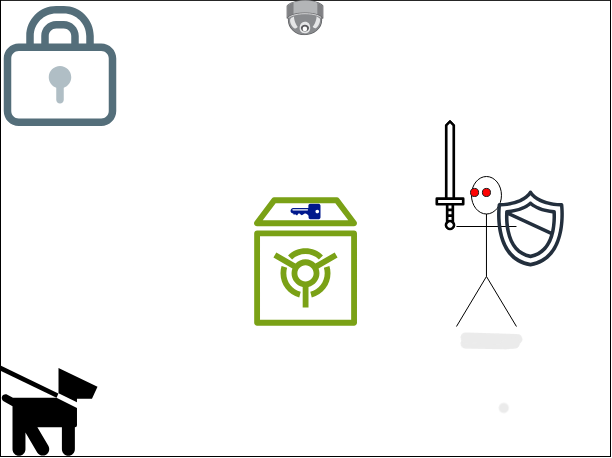

Stufe 1.1: Terminologie
Stufe 1.1.1: Seed-Phrase / privater Schlüssel
Eine Seed-Phrase ist eine Liste aus 12 oder 24 Wörtern, die den privaten Schlüssel Ihrer
Bitcoin-Wallet repräsentiert.
Sie gewährt vollen Zugriff auf Ihre Bestände — wer sie kennt,
kann Ihre Bitcoin ausgeben.
Mit der Seed-Phrase können Sie Ihre Wallet auf jedem Gerät wiederherstellen, selbst wenn Ihre
Hardware oder Software verloren geht.
Bewahren Sie sie sorgfältig auf und teilen Sie sie niemals online oder mit Personen, denen Sie
nicht vollständig vertrauen.
Stufe 1.1.2: Einzelsignatur (Single Sig)
Eine Single-Sig-Wallet ist eine Bitcoin-Wallet, die durch einen privaten Schlüssel gesichert
ist.
Nur die Person, die diesen Schlüssel — oder die Seed-Phrase — kontrolliert, kann auf die Mittel
zugreifen und sie ausgeben.
Sie ist einfach und für persönliche Wallets üblich, erzeugt aber einen Single Point of Failure.
Geht der Schlüssel oder die Seed-Phrase verloren oder wird sie gestohlen, sind die Bitcoin
dauerhaft verloren.
Stufe 1.1.3: Angriffsvektor (AV)
Ein Angriffsvektor ist jede Methode oder jeder Weg, den ein Angreifer nutzt, um Ihre Bitcoin
oder die Schlüssel zu stehlen, die sie kontrollieren.
Häufige Vektoren sind Phishing-Links, Malware auf Geräten, kompromittierte Hardware-Wallets,
schwache Backups und Social-Engineering-Betrug.
Das Verständnis wahrscheinlicher Vektoren hilft Ihnen, Schutzmaßnahmen wie Hardware-Wallets,
air-gapped Backups und eine strikte Prüfung von Links und Geräten zu wählen.
Bleiben Sie wachsam: Die Reduktion von Angriffsvektoren ist der beste Weg, um
Guthaben zu schützen.
Stufe 1.1.4: Öffentlicher Schlüssel (xPub)
Ein öffentlicher Schlüssel ist der kryptografische Wert, der aus Ihrem privaten Schlüssel
abgeleitet wird und den andere nutzen, um Eigentum zu prüfen und Bitcoin zu senden.
Ein xpub (Extended Public Key) kann alle öffentlichen Adressen einer Wallet erzeugen, ohne den
privaten Schlüssel preiszugeben, und ist daher nützlich für Watch-Only-Wallets und die Adressgenerierung.
Obwohl ein xpub keine Ausgaben erlaubt, legt das Teilen die komplette Transaktionshistorie und
zukünftige Adressen offen, was die Privatsphäre reduziert.
Verwenden Sie xpubs nur für reine Anzeigezwecke (Buchhaltung, Backups oder
Watch-Only-Wallets) und vermeiden Sie die Veröffentlichung, wenn Sie Aktivitäten privat halten
möchten.
Stufe 1.1.5: Materialisierte Seed-Phrase
Eine materialisierte Seed-Phrase ist eine Seed-Phrase, die zuvor nur auswendig gelernt
(immateriell) war und nun in der physischen Welt festgehalten wurde — aufgeschrieben,
in Metall graviert oder anderweitig offline gespeichert.
Dadurch entfällt die Last perfekter Erinnerung und die Wiederherstellung wird einfacher, aber
es entsteht eine physische Angriffsfläche: Wer die materialisierte Seed-Phrase findet oder
kopiert, kann die Guthaben ausgeben.
Behandeln Sie physische Kopien wie Bargeld:
Bewahren Sie sie sicher und redundant auf (z. B. feuersicherer Safe, mehrere vertrauenswürdige
Orte) und vermeiden Sie vorhersehbare Beschriftungen oder offensichtliche Ablageorte.
Stufe 1.2: Angriffsvektor- /
Bedrohungsmodell-Analyse
Stufe 1.2.1: Bedrohungen einer immaterialisierten Seed-Phrase
Der Seed oder private Schlüssel ist immaterialisiert, wenn er nicht aufgeschrieben
wurde.
Das bedeutet, nur der Besitzer des Schlüssels kennt ihn.
Um ihn zu verwenden, muss er beim Signieren von Transaktionen mit dem Seedsigner
zumindest vorübergehend materialisiert werden.
Da der Seedsigner zustandslos ist, dematerialisiert er den Seed / privaten Schlüssel,
sobald die Stromversorgung beendet wird.
Hier sind die wichtigsten Bedrohungskategorien für einen immaterialisierten Seed / privaten
Schlüssel:
-
Gedächtnisversagen: Seed-Phrase vergessen

Eine sehr einfache Art, seine Bitcoin zu verlieren, ist das Vergessen der
Seed-Phrase. Das
kann passieren, wenn die Wortreihenfolge der mnemonischen Seed-Phrase
vertauscht wird oder die Seed-Phrase von Anfang an falsch gelesen wurde.
Kognitiver Abbau ist ein weiterer Faktor, der zum Verlust wichtiger
Informationen beitragen kann.
Während das erste Problem vermeidbar ist, lässt sich kognitiver Abbau nicht
vollständig kontrollieren und muss im Abwehrsystem berücksichtigt werden.
Lösung:
In den meisten Szenarien sollte eine Seed-Phrase materialisiert und sicher
verwahrt werden, um zu verhindern, dass diese Bedrohung letztlich zu
Guthabenverlust führt.
Ausnahmen sind der Transport von Guthaben über eine Grenze, wenn es entscheidend
ist, dass Dritte bei einer Durchsuchung keine materialisierte Seed-Phrase
finden. Nach Abschluss des Transports sollte der Seed entweder materialisiert
werden oder die Mittel auf eine andere Seed-Phrase übertragen werden.
-
Zwang
Erpressung, Nötigung und Zwang
Nötigung — Jemand kann körperliche Gewalt, Drohungen oder anhaltenden Druck
einsetzen, um Sie zur Preisgabe des auswendig gelernten Seeds oder zur Eingabe
in ein Gerät zu zwingen; auswendig gelernte Geheimnisse sind besonders
verletzlich, weil Sie vor Ort zur Offenlegung gezwungen werden können.
Erpressung — Ein Angreifer könnte Ihnen, Ihrer Familie oder Ihrem Eigentum
schaden, wenn Sie den Seed nicht herausgeben oder Gelder transferieren; weil
der Seed in Ihrem Kopf ist, können Sie ihn vor einem entschlossenen Erpresser
nicht „verstecken“.
Erpressung mit Drohung — Ein Angreifer könnte drohen, sensible persönliche
Informationen (echt oder erfunden) zu veröffentlichen, falls Sie den Seed
preisgeben oder Forderungen nachkommen; der psychologische Druck kann
ausreichen, um auswendig gelerntes Geheimwissen zu brechen.
Lösungen:
Die Abwehr dieser Bedrohungskategorie ist komplexer und mehrschichtig, und jeder
Bitcoiner muss für sich entscheiden, wie umfassend die Verteidigungsstrategie
sein soll.
Hier kommen Täuschungs-Wallets und der fehlende Sofortzugriff auf den Großteil
der eigenen
Bestände ins Spiel. Der Bitcoiner kann sich dafür entscheiden, sich unter
Zwang nicht vollständig zur Preisgabe der Seed-Phrase befähigen zu können,
indem nicht alle notwendigen Informationsstücke bekannt sind.
Grundlegende Operational Security, etwa die eigenen Bestände nicht offenzulegen,
möglicherweise nicht zu nennen, wann Bitcoin erstmals gekauft wurden und wie
sie gespeichert sind, sollte verinnerlicht werden. Mehr dazu im OPSEC-Abschnitt
später im Leitfaden.
-
Beobachtung

Überwachung bei der Seed-Eingabe
Versteckte Kameras, kompromittierte Bildschirme oder Aufnahmegeräte können Ihre
Seed-Phrase erfassen, während Sie sie tippen oder in eine Wallet eingeben. Selbst
ein immaterialisierter Seed ist in dem Moment exponiert, in dem er auf einem
überwachten Gerät eingegeben wird.
Lösungen:
Best Practice ist, die Seed-Phrase niemals in einem Raum mit Kameras oder
Mikrofonen zu verwenden. Es sollte entweder keine Fenster geben oder Fenster
mit Jalousien. Außerdem sollten sich keine Personen im Raum befinden, die
nicht zu den Seed-Phrase-Bewahrern gehören.
Achten Sie außerdem darauf, die Wörter der mnemonischen Seed-Phrase beim Eingeben
in den Seedsigner oder beim Aufschreiben nicht auszusprechen.
Best Practice ist, den Seedsigner oder zumindest ein anderes Gerät zu nutzen, das
die Seed-Phrase vom Internet getrennt hält (air-gapped).
-
Nichtverfügbarkeit: Handlungsunfähigkeit oder Tod
Diese Bedrohung wird im Kurs zur Nachlassplanung im Detail behandelt. Dort lernt
der Nutzer, ein System zu entwickeln, um Mittel an die nächsten Angehörigen oder
andere gewählte Erben zu übertragen, sodass sie das Geld bis zum Tod verwalten
oder es im Todesfall erhalten.
-
Social Engineering

Auch wenn andere Bedrohungen vielleicht bedrohlicher wirken, ist Social
Engineering eine der wahrscheinlichsten Ursachen für den Verlust von Guthaben.
- Vorwand / Identitätsvortäuschung — Angreifer geben sich als
vertraute Person/Dienst aus, um nach dem Seed zu fragen.
- Grooming / Vertrauensaufbau — Baut über Zeit Vertrauen auf,
bis Sie Geheimnisse preisgeben.
- Informationsgewinnung in beiläufigen Gesprächen —
scheinbar harmlose Fragen, die Wörter, Reihenfolge oder Hinweise
herausziehen.
- Phishing über Accounts/Kontakte — kompromittiert Freunde
oder Dienste, um Sie zur Preisgabe des Seeds zu bewegen.
- Druck durch Autorität/Dringlichkeit — vorgetäuschte
Notfälle oder offiziell klingende Forderungen erzwingen die Preisgabe.
- Emotionale Manipulation — Ausnutzen von Angst, Mitgefühl,
Romantik oder Schuld, um Sie zur Herausgabe zu bewegen.
- Verrat durch Insider — vertraute Personen (Freunde,
Familie, Kollegen), die den Seed erfahren und später missbrauchen.
- Informations-Puzzeln — Sammeln kleiner Bruchstücke aus
verschiedenen Interaktionen, bis der vollständige Seed rekonstruiert werden
kann.
Lösungen:
- Geben Sie Ihre Seed-Phrase niemals auf einem internetverbundenen Gerät ein.
- Nutzen Sie eine Hardware-Wallet, damit der Seed isoliert bleibt und nie
abgetippt wird.
- Teilen Sie nie, dass Sie eine Seed-Phrase besitzen — erwähnen Sie es nicht
einmal.
- Ignorieren Sie unaufgeforderte Nachrichten, Links oder Anrufe zu Ihrer
Wallet oder Bitcoin.
- Prüfen Sie alle URLs, Updates und Software-Quellen manuell.
- Halten Sie Wiederherstellung und Backup-Prozesse vollständig offline.
- Nutzen Sie gegebenenfalls Multisig-Setups, um einen Single Point of Failure
oder Zwang zu verhindern.
- Bewahren Sie Backups sicher an mehreren vertrauenswürdigen und privaten
Orten auf.
- Bereiten Sie einen Plan für Tod oder Handlungsunfähigkeit vor, ohne den
vollständigen Seed offenzulegen.
- Bleiben Sie privat — zeigen Sie keine Kontostände und sprechen Sie nicht
öffentlich über Bestände.
Stufe 1.2.2: Bedrohungen einer materialisierten Seed-Phrase
Wenn der Seed dauerhaft in Form eines Backups materialisiert wird, entstehen zwei neue
Bedrohungskategorien.
 Abbildung 7: Bedrohungskategorien der materialisierten Seed-Phrase
Abbildung 7: Bedrohungskategorien der materialisierten Seed-Phrase
-
Diebstahl

Da der Seed auf einem physischen Objekt gespeichert oder als digitale Kopie
dauerhaft gemacht wird, kann ein Dieb, der entweder vom Schlüssel weiß oder ihn
bei einem Einbruch als solchen erkennt, die Guthaben stehlen.
-
Physische Umweltbedrohungen
Wenn es nur eine physische Kopie gibt, wird der Schlüssel anfällig für
Zerstörung durch Umwelteinflüsse wie Wasser, Feuer oder Quetschung. Korrosion
oder Elektrizität können das Backup ebenfalls beschädigen.
Stufe 2: Die Bausteine der Verteidigung
Diese Stufe stellt die Verteidigungsbausteine vor, mit denen ein Bitcoiner arbeiten kann. Dazu
zählen Seed-Modifikatoren, Backup-Architektur sowie Power- und Stealth-Defense-Tools.
Stufe 2.1: Seed-Modifikatoren, die Passphrase
Es gibt verschiedene Seed-Modifikatoren, die Bitcoinern zur Verfügung stehen. Dieses Kapitel
konzentriert sich auf die Passphrase.
 Symbol für eine Bitcoin-Passphrase
Symbol für eine Bitcoin-Passphrase
Wenn Sie mehr über die anderen Modifikatoren erfahren möchten, klicken Sie auf die Details
unten.
Sie sind für diesen Kurs nicht erforderlich.
Klicken, um eine Liste aller Seed-Modifikatoren zu sehen
1. BIP39-Passphrase (das „25. Wort“)
Eine vom Nutzer definierte Zeichenkette, die bei der Seed-Ableitung hinzugefügt wird.
Erzeugt eine vollständig neue Wallet auf Basis derselben 24 Wörter.
- Wirkung: Gleicher Seed + andere Passphrase = nicht verwandte Wallets.
- Einsatz: Versteckte oder sekundäre Wallets (plausible
Abstreitbarkeit).
- Risiko: Vergessen bedeutet dauerhaft keinen Zugriff.
- Tipp: Sollte lang, einprägsam und einzigartig sein.
2. Varianten des Ableitungspfads
Das Ändern des Ableitungspfads (z. B. m/44'/0'/0' → m/84'/0'/0')
erzeugt andere Adresstypen oder parallele Wallets.
- Wirkung: Erzeugt neue Adresssätze aus demselben Seed.
- Einsatz: Getrennte Wallets für Sparen, Ausgaben oder Vererbung.
- Risiko: Es muss dokumentiert werden, welche Pfade zur
Wiederherstellung verwendet wurden.
3. Individuelles Salt / Double-PBKDF2-Schicht
Hinzufügen eines zusätzlichen privaten Salts zum Seed-Ableitungsprozess, wodurch ein
einzigartiger Seed entsteht, selbst wenn die Wörter bekannt sind.
- Wirkung: Erhöht die kryptografische Einzigartigkeit.
- Einsatz: Fortgeschrittene Nutzer, die hardwaregebundene Sicherheit
suchen.
- Risiko: Nicht standardisiert; Recovery-Tools unterstützen es
möglicherweise nicht.
4. Externe Verschlüsselungsschicht
Verschlüsselung des Seeds oder von Teilen davon mit einem separaten Schlüssel oder
Passwort (z. B. AES-Verschlüsselung).
- Wirkung: Schützt den Seed, falls er in digitaler oder physischer Form
gefunden wird.
- Einsatz: Geeignet für Umgebungen, in denen die physische Sicherheit
unsicher ist.
- Risiko: Ohne Dokumentation nicht kompatibel mit air-gapped
Wiederherstellung.
5. Kodierungs- oder Transformationsschemata
Verschleiern des Seeds oder der Passphrase mithilfe von Buchcodes, Mustern oder numerischer
Kodierung.
- Wirkung: Lässt das Backup ohne Schlüssel bedeutungslos erscheinen.
- Einsatz: Stealth Defense und geringe Erkennbarkeit.
- Risiko: Dekodierungsregeln müssen sicher aufbewahrt werden.
6. Wallet-spezifische Modifikatoren
Fortgeschrittene Optionen wie BIP85-Child-Seeds, Miniscript-Parameter oder
Vererbungsbedingungen.
- Wirkung: Ermöglicht hierarchische oder zeitbasierte Wallet-Logik.
- Einsatz: Langfristige Setups, Unternehmens- oder Familiensysteme.
- Risiko: Erfordert wallet-spezifisches Verständnis und Dokumentation.
Zusammenfassung
Die BIP39-Passphrase ist der einzige weit verbreitete und standardisierte
Seed-Modifikator. Andere bieten mehr Geheimhaltung, tauschen jedoch Portabilität und
Einfachheit ein und sind am besten für fortgeschrittene Nutzer geeignet.
Eine Passphrase ist ein Seed-Modifikator, weil sie einen zusätzlichen Input
darstellt, der das kryptografische Ergebnis
der Seed-Wörter verändert, ohne die Wörter selbst zu verändern.
Die Seed-Phrase allein erzeugt einen Master Seed, der die Wurzel für alle privaten
Schlüssel und Adressen ist. Wenn Sie eine Passphrase hinzufügen, wird sie über den
BIP39
PBKDF2-Prozess mit dem Seed kombiniert, um einen vollständig anderen Master Seed zu
erzeugen.
Damit lässt sich effektiv eine versteckte Wallet hinter der ursprünglichen Seed-Phrase
erzeugen.
Kernaussagen
- Gleiche Recovery-Wörter + andere Passphrase = andere Wallet.
- Eine fehlende oder falsche Passphrase bedeutet, dass die Wallet nicht wiederhergestellt
werden kann.
- Die Passphrase wird von der Wallet-Software niemals gespeichert.
 Abbildung 1: Seed-Modifikator-Passphrase-Diagramm
Abbildung 1: Seed-Modifikator-Passphrase-Diagramm
Stufe 2.2: Backup-Architektur / Redundanz & Verteilung
Während Seed-Modifikatoren den Seed selbst verändern,
verändern Redundanz & Verteilung die Architektur des Verteidigungsmodells.
Das geschieht, weil die Anzahl der Schlüssel-Instanzen durch Kopien erhöht wird
(Redundanz).
Sinnvolle Verteilung platziert die Kopien an unterschiedlichen Orten (Verteilung), um einen
Verlust der Mittel zu vermeiden, falls ein Standort und/oder eine Kopie zerstört wird.

Abbildung 2: Diagramm zu Redundanz und Verteilung
Stufe 2.2.1: Redundanz
Redundanz bedeutet, mehrere Kopien kritischer Daten oder Systeme zu erstellen, um
Verfügbarkeit und Haltbarkeit bei Verlust oder Ausfall sicherzustellen.
Wirkung
Sie bietet Backup-Ebenen, sodass eine andere Kopie einspringen kann, wenn eine Kopie verloren,
beschädigt oder unzugänglich ist.
Vorteile
- Erhöht Zuverlässigkeit und Fehlertoleranz.
- Schützt vor versehentlichem Löschen oder Hardwareausfällen.
- Verbessert die langfristige Haltbarkeit von Daten.
Nachteile
- Erfordert mehr Speicherplatz und Pflege.
- Kann die Komplexität und potenzielle Exponierung erhöhen, wenn Kopien nicht gut
gesichert sind.
- Höhere Kosten für Speicherung und Verwaltung.
Stufe 2.2.2: Verteilung
Verteilung bedeutet, Ihre Backup-Kopien auf mehrere Orte oder Stellen zu verteilen.
Der Fokus liegt auf Trennung und Unabhängigkeit, um möglichst viele Single Points of Failure
(SPOF) zu eliminieren.
Dieses Verteidigungssystem konzentriert sich auf geografische Streuung.
Der Nutzer muss den gewünschten Trennungsgrad festlegen — vom selben Haus über
Nachbarschaft, Stadt, Region, Land bis hin zu Kontinent und potenziell sogar Weltraum.
In Regionen mit hohem Risiko für Naturkatastrophen ist es ratsam, Backups so weit auseinander
zu platzieren, dass die Zerstörung beider Standorte äußerst unwahrscheinlich ist.
Vorteile
- Reduziert das Risiko eines Single Point of Failure.
- Erhöht die Widerstandsfähigkeit gegen physische Katastrophen oder Diebstahl.
- Kann mit Redundanz zu starker, mehrschichtiger Sicherheit kombiniert werden.
Nachteile
- Erhöht logistische Komplexität und Koordinationsaufwand.
- Erschwert das schnelle Zusammenführen aller Teile bei Bedarf.
- Erfordert sorgfältige Dokumentation, um Standorte oder Anteile nicht aus dem Blick
zu verlieren.
Stufe 2.3: Die Verteidigungswerkzeuge
Verteidigungswerkzeuge sind Maßnahmen, die die Widerstandsfähigkeit des Backups gegen Verlust,
Diebstahl oder Schaden erhöhen, ohne den Seed, seine Anzahl oder die Speicherorte zu
verändern.
Stufe 2.3.1: Power Defense
Stufe 2.3.1.1: Die Power-Defense-Tools
Power-Defense-Tools sind physische oder mechanische Maßnahmen, die Angreifern den
Zugriff auf ein Backup oder den Seed erheblich erschweren.
Sie bieten starken Schutz gegen Diebstahl, Zerstörung oder Manipulation.

Abbildung 3: Power-Defense-Tools
-
Verstärkte Backup-Medien:
Gehärtete Metallplatten (Edelstahl, Titan, Inconel) schützen den gravierten
Seed vor Feuer, Wasser und physischer Beschädigung.
-
Sichere Aufbewahrung:
Feuerfeste, wasserbeständige Safes oder Tresore — idealerweise aus
verstärktem Stahl oder Schließfächer, die erheblichen Zeitaufwand, Werkzeuge
oder Autorisierung erfordern.
-
Zugangskontrolle & Detektion:
Physische Schlösser, Sicherheitsgitter, Wachpersonal, Alarmsysteme und
Überwachung schränken den Zugang ein und schrecken Manipulationen ab.
Vorteile
- Schützt vor Diebstahl oder Zerstörung.
- Schreckt Angreifer ab, da Zeit- und Aufwand für einen Zugriff steigen.
Nachteile
- Mit zunehmenden physischen Schutzmaßnahmen steigen die Kosten.
- Ohne Stealth signalisieren sichtbare Abwehrmaßnahmen ein wertvolles Ziel.
Stufe 2.3.1.2: Backup-Materialien
und ihre Eigenschaften
In dieser Stufe schauen wir uns mögliche Materialien an, mit denen Sie Ihre Seed-Phrase
speichern können.
Die folgende Liste bietet eine konzentrierte Auswahl der bestmöglichen Materialien und lässt
Dinge wie Papier und andere sehr schwache Materialien außen vor.
Wenn Sie eine umfassende Rangliste von Materialien mit ihren jeweiligen Eigenschaften
ansehen möchten, einschließlich Wasser- und Hitzebeständigkeit sowie Härte:
Hier klicken
BTC-Seed-Speichermaterialien
| Rang |
Material |
Haltbarkeit |
Vorteile |
Nachteile |
Typische Nutzung / Kosten |
| 1 |
Papier |
Sehr schlecht / schlecht / schlecht / schlecht |
Günstig, leicht zu beschriften |
Brennt, saugt sich voll, reißt, altert, leicht zu kopieren |
Heimdruck — sehr geringe Kosten |
| 2 |
Karton / Karteikarte |
Sehr schlecht / schlecht / schlecht / schlecht |
Etwas steifer als Papier |
Gleiche Schwächen wie Papier, sperrig |
Geringe Kosten |
| 3 |
Fotodruck / Fotos |
Schlecht / schlecht / schlecht / schlecht |
Leicht in Wallets/Umschlägen zu lagern |
Verblasst, Wasserschäden, Feuer |
Geringe Kosten |
| 4 |
Kunststoff-laminiertes Papier |
Schlecht / mittel / mittel / schlecht |
Verhindert Verschmieren, kurzfristig wasserbeständig |
Schmilzt bei Feuer, Laminat kann sich lösen, nicht archivfest |
Geringe Kosten |
| 5 |
Holz (graviert oder gebrannt) |
Schlecht / mittel / schlecht / mittel |
Rustikal, leicht zu gravieren |
Brennt, verrottet, Insekten, quillt bei Wasser |
Gering–moderat |
| 6 |
Dünne Aluminiumfolie / -platte |
Schlecht / gut / mittel / schlecht |
Günstig, wasser- und teilweise korrosionsbeständig |
Leicht zu schneiden/reißen, geringe Quetschfestigkeit, schmilzt bei hoher Temperatur |
Geringe Kosten |
| 7 |
Kupfer- / Messingblech (weiches Metall) |
Mittel / gut / mittel / mittel |
Korrosionsbeständig, leicht zu gravieren |
Relativ weich (kann sich biegen), korrodiert in manchen Umgebungen |
Gering–moderat |
| 8 |
Dicke Aluminiumplatte |
Mittel / gut / mittel / gut |
Leicht, wasserbeständig, bessere Hitzetoleranz |
Niedrigerer Schmelzpunkt als Stahl, kann sich bei intensivem Feuer verformen |
Moderat |
| 9 |
Dünner Edelstahl |
Gut / ausgezeichnet / sehr gut / gut |
Stabil, rostbeständig, weit verbreitet |
Weicher als gehärtete Stähle, kann sich bei extremer Hitze verziehen |
Moderat |
| 10 |
Kommerzielle Edelstahl-Crypto-Platte |
Gut / ausgezeichnet / sehr gut / sehr gut |
Für Seeds entwickelt, langlebig, manipulationssicher |
Stanz-/Gravierwerkzeug nötig; moderate Kosten |
Moderat–hoch |
| 11 |
Reines Nickelblech |
Sehr gut / ausgezeichnet / ausgezeichnet / sehr gut |
Hohe Temperaturtoleranz, korrosionsbeständig |
Weicher als manche Legierungen, teurer als Edelstahl |
Moderat–hoch |
| 12 |
Inconel / Nickel-Chrom-Legierung |
Ausgezeichnet / ausgezeichnet / ausgezeichnet / ausgezeichnet |
Hervorragende Hochtemperaturbeständigkeit |
Teuer, schwerer zu gravieren |
Hohe Kosten |
| 13 |
Titanplatte |
Ausgezeichnet / ausgezeichnet / ausgezeichnet / ausgezeichnet |
Sehr robust, korrosionsfrei, hoher Schmelzpunkt, geringes Gewicht |
Teuer, spezialisierte Gravur nötig |
Hohe Kosten |
| 14 |
Gehärtete Werkzeugstahlplatte |
Ausgezeichnet / ausgezeichnet / sehr gut / ausgezeichnet |
Extrem robust, hohe Druck- und Hitzebeständigkeit |
Kann korrodieren, wenn nicht rostfrei; schwer |
Hohe Kosten |
| 15 |
Keramik / Granitstein |
Ausgezeichnet / ausgezeichnet / ausgezeichnet / gut (spröde) |
Übersteht sehr hohe Hitze, chemisch inert |
Spröde, sperrig, Gravur kann flach sein |
Moderat–hoch |
Das in diesem Leitfaden empfohlene Material ist Edelstahl aufgrund seiner Haltbarkeit und
Kosteneffizienz.
Jedes höherwertige, widerstandsfähigere, aber auch teurere Material ist ebenfalls geeignet,
wenn der Einzelne dies wünscht.
Stufe 2.3.2: Stealth Defense
Stealth-Tools sind Methoden und Objekte, die den Ziel-Seed schwerer erkennbar und
auffindbar machen. Sie setzen auf Tarnung, Ablenkung und minimale Sichtbarkeit, damit
ein Angreifer das echte Material übersieht.
- Versteckt im Offensichtlichen: Seed in einem Alltagsgegenstand notiert oder graviert
(Buch, Tagebuch, hinter einem Bild, in einem Haushaltsgegenstand).
- Falsche Beschriftung: Das Backup als unbedeutend oder irreführend kennzeichnen (z. B. „alte
Notizen“, „Garantie“ oder „Belege“).
- Köder-Wallets: Fake-Wallets oder Seed-Phrasen, die Diebe in die Irre führen, während die
echten Mittel anderswo geschützt sind.
- Verschlüsselter digitaler Speicher: Seed in einer Datei, einem Bild oder Container mit
starker Verschlüsselung versteckt; wirkt wie harmlose Daten, bis er entschlüsselt wird.
- Stille und Geheimhaltung: Verbale und schriftliche Hinweise minimieren; unnötige Personen
nicht informieren und niemals offensichtliche Hinweise notieren.
 Abbildung 4: Stealth-Defense-Tools
Abbildung 4: Stealth-Defense-Tools
Vorteile
- Verringert die Wahrscheinlichkeit, dass ein Angreifer den Gegenstand als wertvoll erkennt.
- Geringe Kosten und oft leicht umzusetzen.
- Lässt sich gut mit Redundanz und Verteilung für mehrschichtige Verteidigung kombinieren.
Nachteile
- Hängt von Geheimhaltung ab — wenn das Schema entdeckt wird, versagt der Schutz.
- Kann versehentlich entsorgt oder verloren gehen, wenn die Tarnung zu überzeugend ist.
- Kann operative Reibung erzeugen (Tarnung merken, Echtheit prüfen, ohne das Geheimnis
offenzulegen).
Umsetzungstipps
- Bedeutungen und Orte sicher dokumentieren (verschlüsselte Notiz oder gemerkte Mnemonik),
um Vergessen zu vermeiden.
- Stealth mit anderen Maßnahmen kombinieren: Köder, physische Sicherheit und Verteilung.
- Offensichtliche Krypto-Bilder oder -Beschriftungen vermeiden, die Aufmerksamkeit anziehen.
- Unauffällige, variierende Tarnungen nutzen und über die Zeit rotieren, um Muster zu
vermeiden.
- Haltbarkeit und Wiederherstellbarkeit testen (z. B. ob Schreiben/Gravur erwartete
Bedingungen übersteht), ohne das Geheimnis offenzulegen.
Stufe 2.4: OPSEC – Operational Security
OPSEC — Mission
Schützen Sie Vertraulichkeit, Integrität und Verfügbarkeit von Cold-Storage-Backups, indem Sie
einfache, wiederholbare Handhabungsregeln durchsetzen, die Social Engineering, Diebstahl und
versehentlichen Verlust verhindern.
Kernannahmen (Checkliste)
- Seed wird niemals getippt, fotografiert, gescannt oder laut vorgelesen.
- Seed berührt niemals ein internetverbundenes Gerät.
- Backup-Standorte, Architektur und Beträge werden nicht mit Außenstehenden besprochen.
- Passphrase wird separat gelagert oder auswendig gelernt; nicht bei Seed-Kopien.
- Alle Anfragen zu Seed/Passphrase/Backups gelten als feindlich, sofern sie nicht vorab über
einen Out-of-Band-Code autorisiert wurden.
Handhabungsregeln
- Beim Erstellen oder Wiederherstellen von Backups immer eine air-gapped, kamerafreie
Umgebung nutzen.
- Seed oder Passphrase niemals in ein vernetztes Gerät eingeben; nur Hardware-Wallets oder
verifizierte Offline-Tools verwenden.
- Physische Backups unauffällig beschriften; offensichtliche „Seed“-Markierungen vermeiden.
- Nur das Nötige duplizieren und Kopien gemäß der gewählten Architektur verteilen.
- Dokumentation minimal und verschlüsselt halten; Wiederherstellungsanweisungen und Schlüssel
nicht zusammen aufbewahren.
Kommunikationsprotokoll
- Mit jedem vertrauenswürdigen Kontakt oder Erben eine Out-of-Band-Verifikation vereinbaren
(Codephrase, physischer Token).
- Alle operativen Anfragen persönlich oder über vorab vereinbarte sichere Kanäle abwickeln;
keine spontanen Nachrichten akzeptieren.
- Bei Kontaktaufnahme zum Backup nichts preisgeben; zuerst Verifikationsschritte einleiten.
Insider- & Zwangsabwehr
- Kompartimentieren: vermeiden, dass eine einzelne Person alle Komponenten kennt
(Standorte + Passphrase).
- Bei Bedarf und vorher getestet Köder-Wallets und plausible Abstreitbarkeit nutzen.
- Vertrauenspersonen im Protokoll schulen: wie verifiziert wird und wonach niemals gefragt
wird.
Test- & Wartungsrhythmus
- Wiederherstellungen mindestens jährlich auf einem air-gapped Gerät prüfen (einen Pfad
testen, nicht alle gleichzeitig).
- Speicherorte rotieren oder Materialien alle 3–5 Jahre bzw. nach großen Lebensereignissen
erneuern.
- Tests und Änderungen in einem verschlüsselten Protokoll festhalten, getrennt von den
Backups.
Notfallabläufe (Sofortmaßnahmen)
- Wenn ein Backup-Standort kompromittiert ist: von einer Kompromittierung ausgehen,
verbleibende Teile verlagern und die Erstellung eines neuen Seed+Passphrase-Paares
erwägen.
- Bei Zwang oder rechtlichem Druck: Sicherheit zuerst (z. B. Köder nutzen, wenn geplant),
danach Mittel in eine neue Wallet verschieben, sobald es sicher ist.
- Bei Unsicherheit über eine Anfrage: stoppen, Out-of-Band verifizieren, nicht unter Druck
handeln.
Hinweis zur Vererbung
- Erben ein minimales, verschlüsseltes Instruktionsset geben, das den
Wiederherstellungsprozess und die Verifikationsmethode beschreibt — Seeds oder Passphrasen
niemals am selben Ort aufbewahren.
- Rechtliche Mechanismen (Testament, Trust, Executor) nutzen, um Zeitpunkt und Bedingungen
für die Offenlegung von Recovery-Details zu steuern.